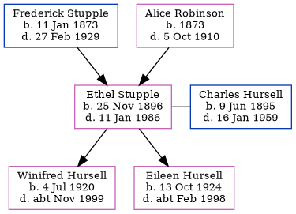

Ethel Mary Alice Hursell (née Stupple) 1896 - 1986
[ Home ] | [ Calendar ] | [ Surnames Index ] | [ Errors ] | [ Family History ]The child of Frederick Stupple (a bootmaker and repairer) and Alice Robinson, Ethel Stupple, the second cousin twice-removed on the mother's side of Nigel Horne, was born in Herne Bay, Kent, England on 25 Nov 18961,2,3,4, was baptised there at Christ Church on 16 Apr 1897 and married Charles Hursell (a railway engine-driver with whom she had 2 children: Winifred Elsie and Eileen Frances) in West Ashford, Kent, England around Feb 19205.
During her life, she was living at North Street in Herne Bay on 31 Mar 19011; at 22 Underdown Street in Herne Bay on 2 Apr 19116 - less than a mile from her first cousin once-removed on her father's side Edwin Mount who was living at 3 Kings Road in Herne Bay; and at Station House Cottage, Wye, Kent on 29 Sept 19392.
She died on 11 Jan 1986 in Ashford, Kent, England4.
Parents
- Frederick was born on 11 Jan 1873
- Alice Mary was born in 1873
Children
- Winifred Elsie was born on 4 Jul 1920
- Eileen Frances was born on 13 Oct 1924
Citations
- 1901 England, Wales & Scotland Census - Findmypast (was age 4 and the daughter of the head of the household)
- 1939 Register - Findmypast (was the wife of the head of the household)
- England & Wales births 1837-2006 - Findmypast
- England & Wales deaths 1837-2007 - Findmypast
- England & Wales Marriages 1837-2005 - Findmypast
- 1911 Census for England & Wales - Findmypast (was age 14 and the daughter of the head of the household)
Media
England & Wales births 1837-2006 - BMD/B/1896/4/AZ/000568/164
1911 Census for England & Wales - GBC/1911/RG14/04357/0059/2
England & Wales deaths 1837-2007 - BMD/D/1986/1/75597182
1939 Register - TNA/R39/1817/1817D/019/01
Kent, Canterbury Archdeaconry Baptisms - GBPRS-CANT-B-96678711
England & Wales Marriages 1837-2005 - BMD-M-1920-1-AZ-001012-135
Family Tree
Map
Generated by ged2site. Last updated on Jul 3, 2024